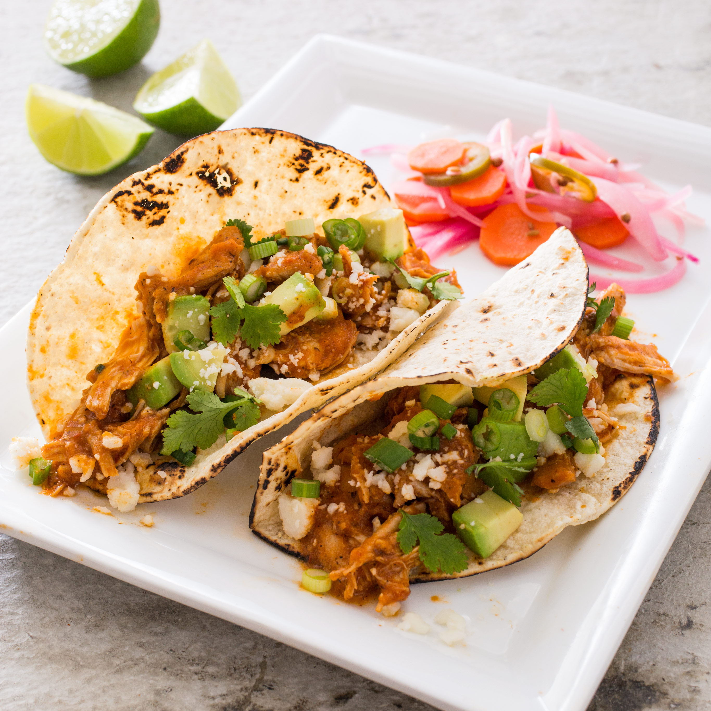

Shredded Chicken Tacos (Tinga de Pollo)
The Description
Tinga de pollo is typically made by poaching breast meat separately from the tomato-and-chipotle-based sauce and combining the two only briefly at the end. For deeper flavor, we chose boneless thighs and cooked them directly in the sauce. Fire-roasted tomatoes increased smokiness, and a little brown sugar and lime juice and zest further boosted the complexity. Simmering the cooked shredded chicken in the sauce for a full 10 minutes before serving gave the sauce a chance to thicken and loosened the chicken’s muscle fibers so the sauce could really work its way into every crevice in the shredded meat’s abundant surface area.
Ingredients
- 2lbs Boneless Chicken Thighs, Trimmed
- Salt and Pepper
- 2 Tablespoons Canolo or Vegetable Oil
- 1 Onion, halved and sliced thin
- 3 Garlic Cloves, minced
- 1 Teaspoon Ground Cumin
- 1/4 Teaspoon Ground Cinnamon
- 1 (14 1/2oz) Can of Diced Fire Roasted Tomatoes
- 1/2 Cup of Chicken Broth
- 2 Tablespoons Canned Chipolte Chile in Adobo
- 2 Teaspoons of Adobo Sauce (From Canned Chipotles)
- 1/2 Teaspoon of Brown Sugar
- 1 Teaspoon of Lime Zest
- 2 Tablespoons of Lime Juice
- (6inch) Corn Tortillas, Warmed
- 1 Avocado, cut into 1/2inch pieces
- 2 oz of Cotija Cheese (1/2 cup) or 2oz of Feta Cheese (1/2 cup)
- 6 Green Onions, green tops minced
- Minced Fresh Cilantro
- Lime Wedge
To Serve
The Directions
- FOR THE CHICKEN: Pat chicken dry with paper towels and season with salt and pepper. Heat 1 tablespoon oil in large Dutch oven over medium-high heat until shimmering. Add half of chicken and brown on both sides, 3 to 4 minutes per side. Transfer to large plate. Repeat with remaining chicken.
- Reduce heat to medium, add remaining 1 tablespoon oil to now-empty pot, and heat until shimmering. Add onion and cook, stirring frequently, until browned, about 5 minutes. Add garlic, cumin and cinnamon; cook until fragrant, about 1 minute. Add tomatoes, broth, chipotle with adobo sauce and brown sugar; bring to boil, scraping up any browned bits.
- Return chicken to pot, reduce heat to medium-low, cover and simmer until meat registers 195 degrees, 15 to 20 minutes, flipping chicken after 5 minutes. Transfer chicken to cutting board.
- Transfer cooking liquid to blender and process until smooth, 15 to 30 seconds. Return sauce to pot. When cool enough to handle, use two forks to shred chicken into bite-size pieces. Return chicken to pot with sauce. Cook over medium heat, stirring frequently, until sauce is thickened and clings to chicken, about 10 minutes. Stir in lime zest and juice. Season with salt and pepper to taste.
- Spoon chicken into center of each warm tortilla and serve, passing avocado, Cotija, green onions, cilantro and lime wedges separately.